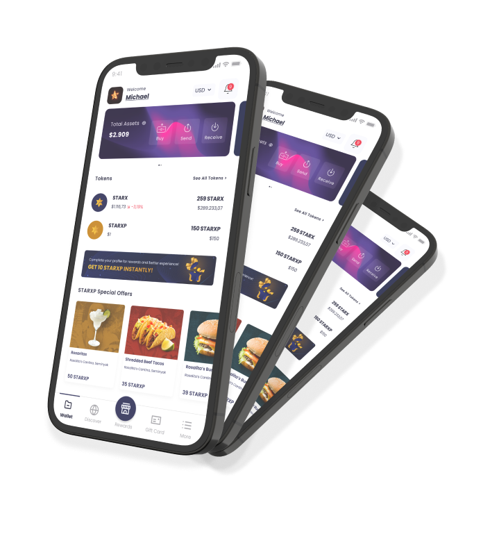

Process Ownership
Defined and executed structured test planning, test matrix design, defect triaging, and release sign-off criteria in Qase and GitLab.
CASE STUDY 01 · FINTECH ECOSYSTEM QA
Comprehensive Quality Assurance across Web & Mobile Fintech Platforms.
At Starworks Global, I spearheaded the quality assurance strategy for StarWALLET—a high-stakes digital wallet ecosystem. From manual exploratory testing to automated regression suites with Cypress and Playwright, I ensured transaction security, payment gateway reliability, and seamless user experiences across web and native mobile apps.

THE CHALLENGE
StarWALLET handles real-world digital asset transactions, multi-currency balance transfers, OTP & biometric Liveness verification, and third-party payment gateway callbacks. A single defect in checkout calculations or callback webhooks can directly cause financial discrepancies and breach user trust.
I established structured test documentation, Qase.io test management, GitLab CI/CD regression pipelines, and rigorous API validation workflows to identify edge cases, race conditions, and integration anomalies before reaching production releases.
TEST COVERAGE & SUITES
Defined and executed structured test planning, test matrix design, defect triaging, and release sign-off criteria in Qase and GitLab.
Covered E2E wallet flows, database record integrity checks in MySQL, REST API contract testing via Postman, and OTP/Liveness verification.
Built automated regression suites to validate wallet authentication, balance transfers, and checkout flows across desktop and mobile viewports.
Collaborated closely with backend engineers, frontend developers, and product owners to rapidly resolve root causes and maintain 99.9% sprint reliability.
The greatest achievement is delivering a fintech ecosystem where users execute digital asset transfers with complete confidence and flawless software stability.